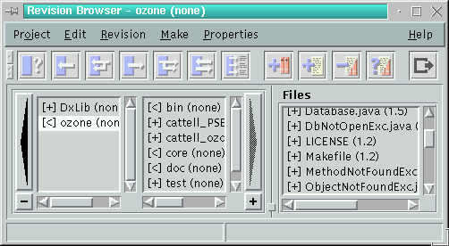
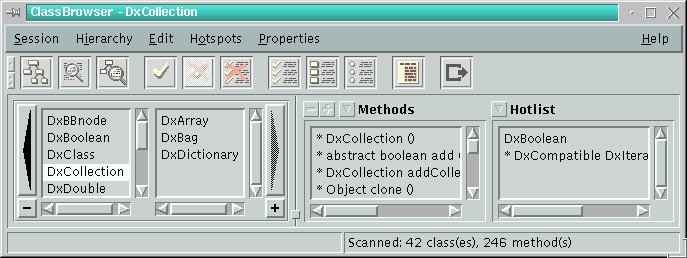
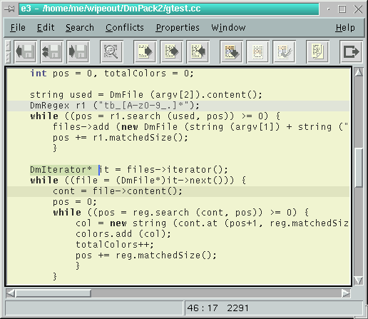
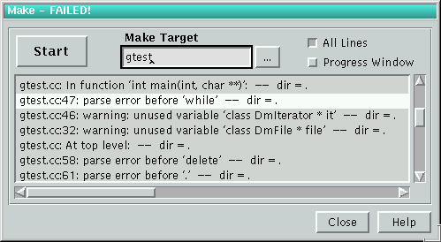
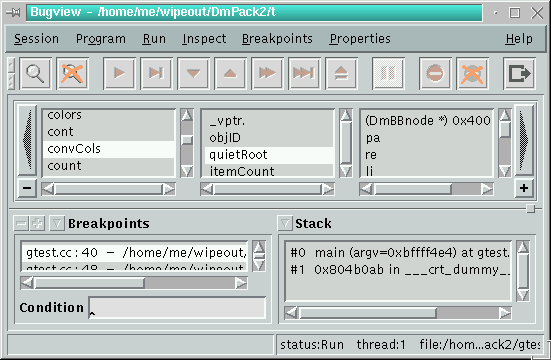

![[ TABLE OF CONTENTS ]](../gx/indexnew.gif)
![[ FRONT PAGE ]](../gx/homenew.gif)


Programming under Linux means you have the choice between various powerful development tools, such as gcc, gdb, make and a lot more. But most of them are command-line tools and especially for beginners not easy to handle. But this is only one side. The other important point is the source code editor. Many people swear by vi (or one of its clones) - I don't mind. But it's not enough to have a good editor, a compiler and a debugger. Especially when you develop larger software projects you need a tool to organize it efficiently, version control would be recommended and for object-oriented languages a class browser is indispensable. Now you have to get all these tools under one umbrella. I see mainly two ways to resolve this problem: one is called (X)Emacs and the other is an Integrated Development Environment.
You can resolve nearly every problem with Emacs (may be in the near future it will cook coffee for you ;)). It is not only an editor: you can use it as mail tool, news reader, file system browser, debugger, compiler and make tool. If you don't have a special feature it is possible to extend Emacs to fit your needs. But in my opinion it does all these things not very easily and intuitively. So I prefer the second way for software development as mentioned above.
In my understanding an Integrated Development Environment gives you a graphical interface to the different tools and joins them in one environment. The tools should help me to organize my projects and support the code-compile-debug cycle. Advanced features are things like a GUI-builder, documentation tool and maybe a CASE-tool like behaviour.
Under Linux you have the choice between various IDEs. They are more or less powerful and more or less expensive. In this article I'd like to introduce one of them which is called WipeOut.
History
At the beginning there was just the idea to have some nice and easy to use frontends for the main development tools of each C++-programmer under Linux: gcc, gdb and make. We decided to use wxWindows [1] by Julian Smart to program the GUI. The first versions of WipeOut were developed with the OpenLook-variant of wxWindows. Later we changed to wxXt by Marcus Holzem because most of the people didn't like OpenLook. For basic data structures (container classes, strings, etc.) we developed dmpack [2]. This library contains also features such as streamable objects and remote method invocation, which are very important to the communication between the various WipeOut components. The communication part of dmpack is based on the socket++-library by Gnanasekaran Swaminathan which provides an object-oriented interface to sockets and pipes.
Components and Features of WipeOut
Now WipeOut is a complete teamwork development environment for C++, Java, Eiffel, Fortran and C projects. (Other languages may follow.) At the present it consists of the following components:
WipeOut is not a RAD-tool. This is because it's not a pure Java or C++ development tool. The editor, the project management, and the make shell work also fine for other projects than C++ or Java. Besides it is hard to decide for a special GUI-toolkit, which would be necessary for the C++ part. So we try to support the programmers with intuitive frontends for various command-line tools and some important additional components, which help for more effective programming.
WipeOut is available for various platforms: Linux/i486, Linux/m68k, Linux/Alpha, Solaris, HP-UX. All these versions are fully compatible, so that you can use WipeOut for multi-platform development. Furthermore there are porting activities for LinuxPPC and Irix.
Currently we provide WipeOut in two versions:
Installation
The Installation is not very difficult. To run WipeOut you need the following packages:
You can obtain the packages from [4]. Then do the following steps:
First Steps
After starting WipeOut you'll see the Project Browser to the left and the (empty) editor to the right. The Project Browser is the central part of WipeOut. Here you open the projects and start the other components.
The first thing we do is to create a new project. Therefore we choose the menu 'Project->New Root Module'. A dialogbox opens and we have to input the directory of the CVS-repository (see below) and the directory of our new project. After confirming WipeOut asks us for adding the 'Makefile' and the '<arch>.def' file. We choose OK. What this files mean we will see later. Now WipeOut creates a new module in the repository and will initialize the project directory.
After creating the new project we now have access to all the other components. At first we will have a look at the Revision Browser.
The Revision Browser - Part I

The Revision Browser manages the modules and files of your project. A module represents a directory and it groups the files logical. But a module can contain submodules so that you can build a module hierarchy, which represents your project.
The Revision Browser shows this hierarchy in a GUI-element called browser box. This box was inspired by a similar GUI-element of the NextStep-System and it's a clever and easy way to display a hierarchy. Each listbox shows one level of the hierarchy. The top of the hierarchy is shown in the most left listbox. If you select an item the listbox to the right contains the children of it. With the arrow buttons to the left and right of the box you can scroll through the hierarchy.
The files belonging to a module are shown in the right listbox. If you double-click on an item the corresponding file will be shown in the editor. To be exact: the file will be opened with the default application of its category (see below).
Every module has several properties. If you select a module and choose Edit->Info for File or Module you get a dialog, where you can modify the module properties. There are the following tabs:
The aim of the game
Now we know some things about modules and categories. It's time to turn back to practice and produce a little chunk of code. In our example we will build up a small String - class including the obligatory 'Hello World' - program.
To create the source code for a module we have three possibilities:
We choose the last point, so that we can take a closer look at the Class Browser. To open it just click on the third button of the Project Browser.
The Class Browser

The Class Browser is bases on an incremental source code parser. That means your code can be incomplete or wrong, but the Class Browser will scan it for classes, methods, and members as good as possible. The Class Browser parses this project directories which you marked as 'Browse' (see above). After building-up the internal database the first time, only such files will be parsed again, which changed or depend from changed files and new files. You have to tell the Class Browser explicitly to update the class hierarchy with Hierarchy->Update (or faster the corresponding toolbar button). But you must only update if you changed a class or method declaration.
Apart from the well-known browserbox, which is used here to show the class hierarchy, the Class Browser has another WipeOut-standard GUI-element - the panelbox.
The development of the panelbox was necessary, because time after time there were to many non-modal dialogs which showed important information. This wasn't easy to survey. The panelbox is clearly structured and gives fast access to various information without loosing survey. The panelbox consists of one or more subpanels. You can assign the number and kind of the panels with the small buttons in the top of it.
The Class Browser has five different subpanels:
The hotlist is a collection of often used classes, methods and members, so that you have fast access to them. With the menu item Hotspots->Add Hotspot you can add the current class, method or member to the hotlist. A double-click on a hotspot opens the corresponding file in the editor. This is similar to all other listboxes. Beside of this you are able to control the listboxes via keyboard: with the cursor keys, 'Home', 'End', 'PageUp' and 'PageDown', but also with alpha-numerical keys. If you press a letter the listbox cursor jumps to the first item beginning with that letter.
But now we want to build our String-class: We do that with Edit->New Class .... We input the name of the class and press Insert In New File. WipeOut will ask us several questions, but we confirm all of them with OK. The editor shows us now a new header file for our String-class.
The next step is to add some methods. We do that with the Edit->New Method ...-dialog. Simply input the method declaration as you know it from C++/Java and set the editor cursor to the right places when WipeOut asks you to do so. After writing some implementation code your source files should look as follows:
Listing 1
// $Id: mueller.html,v 1.2 2002/10/09 22:24:27 lg Exp $
// some comments ...
#ifndef _String_h
#define _String_h
class String {
protected:
char* _data;
public:
String(char *);
virtual String();
virtual String& operator= (char *);
virtual char* data() const;
};
#endif
Listing 2
// $Id: mueller.html,v 1.2 2002/10/09 22:24:27 lg Exp $
// some comments ...
#include <iostream.h>
#include <string.h>
#include "String.h"
String::String (char *data) {
_data = new char[strlen(data)+1];
strcpy (_data, data);
}
String::String() {
delete _data;
}
char* String::data() const {
return _data;
}
String& String::operator= (char* data) {
delete _data;
_data = new char[strlen(data)+1];
strcpy (_data, data);
return *this;
}
main() {
String str ("Hello ...");
cout << str.data() << endl;
}
Because we generated the class with the Class Browser we don't need to update the
class hierarchy explicitly. Beside of this the Class Browser added the files
'String.h' and 'String.cc' automaticly to the module in the Revision Browser.The Revision Browser - Part II
Before we continue just a few words about version control for those of the readers, who are not familiar with it. The repository (we set its directory while creating the new project) is the central database of the version control. All developers get the actual source code version from there. Each developer has a local copy of this version (or a version of her/his choice) and she/he can edit it.
If the developer does a commit the local copy of the file goes into the repository. Now all other developers have access to this new version of the file. They have to update their local copy. If a developer made changes at a file but didn't commit them yet and update this file now, CVS merges the local copy and the actual version of the repository. The developer will not loose his changes. After updating the local copy may contain conflicts. That means the changes of the developer collide with the changes from the repository version. The developer has to resolve these conflicts (with support of the e3) before committing the file again.
If you take look at the file list of the Revision Browser, you will see there four files: 'Makefile', '<arch>.def, 'String.h' and 'String.cc'. All these items have a '[n]' at the beginning and empty parentheses at the end. The signs within the brackets have the following meanings:
Beside of the conflict symbols the signs have the same meaning for modules.
The parentheses after the file name contain the version of the local copy. If we select our module and commit it with Revision->Commit File or Module the version numbers of the files change to '1.1' and the status changes to '+'.
Especially on team development the status of a file or module can change every time. You have three possibilities to keep the Revision Browser up-to-date (Project->Module Properties):
Note that each status update causes a CVS command. If you work with remote repositories but you have only a poor connection to it, it's recommend to choose the second possibility.
WipeOut has a lot other features for version control and team work, e.g. you can create version branches for files and modules, you can merge these branches again and you can assign symbolic names (tags) to versions. You have various possibilities to import existing projects (with or without CVS). All these things are described in the WipeOut documentation and with a little patience it should be easy to find them out.
Before we now compile our small project we'll take a look at the editor.
The Text-Editor

The editor is a central component of WipeOut. You use it for source code editing and whenever another component needs to show a file or to know a source code position it uses the editor. This is one of the basic concepts of WipeOut: only one central text editor.
This causes a very high integration of the editor into the development environment. That's why it is not possible to use another editor within WipeOut. This seems to be a great disadvantage because the most of the developers have their own favourite editor and it's not easy to turn to another one. But this way it is possible to integrate such features as the symbol completion: If you press 'Ctrl-.' in the editor it will try to complete the word you are writing currently. Therefor it uses the database of the Class Browser and looks for a matching class, method or member name.
Another nifty feature is the integrated man page viewer: If you select a symbol in the Text-Editor and press 'Ctrl-m' the SurfBoard will show the related man page if there is one. In the near future we will extend this to info pages and external HTML-documentations.
Syntax Highlighting
The highlighting of syntactical elements increases the readability of source code. The WipeOut-editor uses regular expressions to do that. The syntax is similar to the 'grep'-command. The documentation of WipeOut contains a general overview of the meta-symbols. This kind of highlighting slows down the editor a little bit but it gives you the flexibility to create your own highlighting style.
A style is a set of a regular expression, a file pattern, a color and a font. Each style highlights a special syntactical element specified by the regular expression in the given color and font, but only in those files, which match the file pattern. You can create and edit styles with Properties->Highlighting.
The editor has default styles for C++, Java, Objective-C, LaTeX and HTML. You can use this styles as they are, but you can also change them. There is a lot of space for experiments.
Beside the styles there are some other parameters: various colors, tabs, undo-depth, font sizes, etc. Finally the editor is very easy to use, so that there shouldn't be to big problems.
The Make-Shell

But now back to our mini-project: after creating files, adding them to a module, working with the Class Browser and the Text-Editor it's time to compile the program.
WipeOut uses make to compile your projects. Normally all necessary files will be created automaticly based on the module information. Each module has three different parts for the makefile:
To start make we open the Make-Shell with the 5th button of the Project Browser. This dialog has only a few elements: the Start-button to start make, an edit field to set a special target (an empty field means the default target - 'cplusplus') and two checkboxes. Normally Make-Shell shows only compiler errors and warnings in the lower listbox after make has finished. If we check 'All Lines', we get all the make output in the listbox. If we check Progress Window, a small output console opens while compiling and shows the original make output.
We compile our program simply by pressing Start. After finishing the error listbox shows us a warning about a virtual constructor. We click on the warning and the editor cursor jumps to the error line. We recognize that the constructor should be a destructor and so we complete the implementation and declaration with the tilde-letter. We compile again and now everything should be okay.
To test our program we open the shell of the Project Browser and input the name of our module because this is the name of the program. The output is, oh wonder:
Hello ...
As the next step we extend our project somewhat. Therefor we add two methods:
Listing 3
String& String::operator+= (const String& rhs) {
char* buf = new char[length()];
for (int i=0; i<length(); i++)
buf[i] = data()[i];
for (int i=0; i<rhs.length(); i++)
buf[length()+i] = rhs.data()[i];
delete _data;
_data = buf;
return *this;
}
int String::length() const {
return strlen(data());
}
We modify the main function as follows:Listing 4
main() {
String str ("Hello");
str += String (" from WipeOut.");
cout << str.data() << endl;
}
After recompiling and running the program we now get a 'Segmentation fault'
and we have no idea why. This is the right time to use the debugger.The debugger

We start the debugger with the fourth button of the Project Browser. The interface consists of similar elements as the Class Browser: the browserbox and the panelbox. The panelbox has five different subpanels:
We arrange the panelbox for our needs: we add the 'Sources'-panel to the two default panels 'Breakpoints' and 'Stack' by clicking on the small 'plus'-button.
Now we load the program with Session->Load Executable. After that the 'Source'-panel should show all source files related to the program.
The browserbox is used to show variable values. The first listbox shows per default all local variables. If you click on an item, the next level shows the value or the components of it. This way you can easy browse classes, structures and arrays. After every action the debugger refreshes the variable values automaticly.
If you like to inspect a variable, which is not shown in the browserbox at the moment, just mark it in the editor and choose Inspect Variable in the toolbar of the debugger. Now the first list of the browserbox contains the variable.
Normally the debugger resolves data structures automaticly, so that you always get the correct values, e.g. it shows the content of a pointer and not the pointer value itself. But sometimes this is not possible, e.g. if you declared an array of integer-pointer as 'int**'. To get the items of the array you have to cast the type with Inspect->Change/Cast Variable.
With Inspect->Move Variable to Top it is possible to move a variable from a lower level of the hierarchy to the top, so that you don't need to browse through the whole hierarchy to get the value of the variable.
Because we've got no idea what's wrong with our program, we simply start it with Run->Run. This causes a 'Segmentation fault' again, but after we have confirmed the messagebox the editor colors the error line with red. We've got an error in the method String::operator+=.
Before we correct the error we should kill the program with Run->Kill. To know what's going on in the method we want to find out what the method data does. We use the Class Browser as cross-referencer to find the implementation of this method. Therefore we mark data and choose Edit->Search Symbol in the Class Browser. Now the editor shows the source code of the method data. We see, that the method doesn't do anything exciting, only returning the _data-pointer. We go back to the String::operator+= method, take a closer look on it and recognize that we've allocated not enough memory for buf. So we modify the first line as follows:
char* buf = new char[length() + rsh.length()];
We compile and run the program again and everything is fine. But we can't
see the output. We resolve the problem with Inspect->Program Console ....
This opens a small console and after starting the program again, we see
the output:Hello from WipeOut.
The debugger has of course a lot of more features than explained above. Besides of Next, Step and setting breakpoints it supports also threads. It is recommended again to read the documentation about it.
Beside of the Symbol-Retriever and the help browser SurfBoard now you touched all the components so that you've got a first impression the way WipeOut works. Of course we develop WipeOut with WipeOut and we find that it very increases our productivity and makes it easier to program than just using a simple text editor. Finally some words about extending WipeOut.
Writing own WipeOut components
At this time WipeOut contains only the most important components of our opinion. There may be a lot of other possibilities, e.g. many people may wish a GUI-builder. We can't and we don't want to do all that alone. So we have created the WDK - the WipeOut Development Kit, which allows you to develop your own components. This interface gives you access to important functions of WipeOut, e.g. showing a file in the editor or adding a file to a module.
If you like to program such components you only need to download the WDK-package from [4]. Apart from the documentation the package contains DmPack2, socket++, the wxXt header files, a simple example component and SpellMaster - a frontend for ispell.
I hope you've got a rare overview about WipeOut and its possibilities. If you have questions, comments or wishes, write us.
| Resources |
| [1] http://web.ukonline.co.uk/julian.smart/wxwin - wxWindows/wxXt by Julian Smart and Marcus Holzem |
| [2] ftp://ftp.virginia.edu - socket++ by Gnanasekaran Swaminathan |
| [3] http://www.softwarebuero.de/dmpack2-eng.html - DmPack2 |
| [4] http://www.softwarebuero.de/wipeout-eng.html - WipeOut |